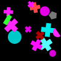
(1)
More than three crosses are red.
At most five shapes are a rectangle.
Four less semicircles than red shapes are lighter than a magenta shape.
Not all the two red shapes but one are a cross.
Three more magenta shapes than cyan shapes are a cross.
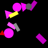
(2)
Exactly all magenta shapes but one are a magenta circle.
At least all shapes but one are bigger than a triangle.
At most all the five circles but one are to the right of a gray rectangle.
A few red shapes are a triangle.
Exactly three shapes are a magenta rectangle.
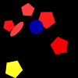
(3)
A quarter of the triangles is green.
Exactly four cyan shapes are bigger than a pentagon.
At least zero of the three cyan shapes are to the right of a yellow shape.
Most shapes are below a blue pentagon.
Exactly three of the four triangles are farther from a yellow pentagon than a cyan shape.
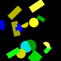
(4)
Not one of the seven yellow shapes is a rectangle.
Exactly zero of the four circles are blue.
At most two blue shapes are a blue ellipse.
Exactly three of the five green shapes are a green rectangle.
Twice as many rectangles as semicircles are closer to a yellow rectangle than a green rectangle.
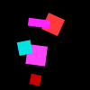
(5)
Three less crosses than yellow shapes are darker than a yellow rectangle.
Three more pentagons than blue shapes are lighter than a green shape.
Less than four red shapes are below a gray shape.
At most zero of the five rectangles are gray.
At least two of the five yellow shapes are below a yellow shape.
(6)
Less than four semicircles are a cyan semicircle.
At least four semicircles are cyan.
At most one of the two cyan shapes is below a cyan square.
At least three ellipses are darker than a green shape.
Not one square is below a green ellipse.
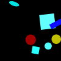
(7)
Less than four of the seven shapes are a rectangle.
More than zero rectangles are below a yellow circle.
At least zero squares are cyan.
At least zero squares are darker than a cyan square.
Exactly five circles are a red circle.
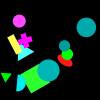
(8)
As many crosses as squares are bigger than a triangle.
Less than two of the five cyan shapes are to the right of a green triangle.
At most five circles are in front of a green shape.
At most one circle is a cyan circle.
All semicircles are to the left of a cyan circle.
(9)
Not five of the seven shapes are in front of a blue semicircle.
A few of the four blue shapes are a triangle.
At most three blue shapes are to the right of a cyan cross.
Exactly four blue shapes are in front of a semicircle.
Exactly all semicircles but one are a blue semicircle.
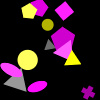
(10)
Five more yellow shapes than red shapes are lighter than a magenta shape.
Almost all yellow shapes are a semicircle.
More than two of the three triangles are closer to a magenta shape than a red shape.
None of the four gray shapes is a circle.
Less than five semicircles are a magenta semicircle.
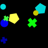
(11)
As many squares as circles are blue.
At least five of the six shapes are bigger than a red circle.
Exactly five squares are red.
At least one of the eight rectangles is to the right of a red square.
More than one shape is below a square.
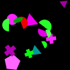
(12)
Most of the three crosses are to the right of a cyan triangle.
More than one semicircle is magenta.
Not two of the four cyan shapes are darker than a pentagon.
At least one ellipse is green.
Less than one shape is above a red pentagon.

(13)
At least one of the five gray shapes is below a yellow shape.
Not all the six gray shapes but one are lighter than a blue shape.
Exactly three shapes are a yellow square.
Not five squares are farther from a gray shape than a yellow shape.
At most five of the six squares are smaller than a square.

(14)
Two less circles than squares are blue.
More than two of the seven shapes are bigger than a blue square.
Not zero shapes are lighter than a green ellipse.
Almost all rectangles are green.
More than one of the three squares is below a square.
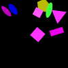
(15)
At most three semicircles are a yellow semicircle.
All of the seven yellow shapes are closer to a yellow shape than a triangle.
A few cyan shapes are a semicircle.
At least all triangles but one are red.
Less than all the eight semicircles but one are below a yellow semicircle.
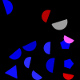
(16)
Five less circles than crosses are closer to a blue shape than a yellow cross.
More than two shapes are a yellow cross.
Not all shapes but one are blue.
Less than one of the seven crosses is smaller than a red triangle.
At least one of the two circles is bigger than a blue cross.
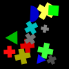
(17)
Two more blue shapes than circles are to the left of a red circle.
Exactly two red shapes are a red circle.
Less than all circles but one are behind a green triangle.
Not all the four circles but one are a blue circle.
Less than four red shapes are to the left of a red circle.
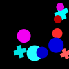
(18)
More than four of the seven shapes are a blue cross.
More than one of the five green shapes is closer to a cross than a magenta shape.
At most all the five crosses but one are lighter than a blue shape.
Not two of the seven blue shapes are lighter than a blue cross.
At least zero shapes are a circle.
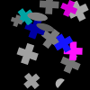
(19)
Exactly three crosses are a gray cross.
Not three of the two cyan shapes are darker than a cross.
As many magenta shapes as gray shapes are a cross.
At least three crosses are a gray cross.
At least all the two magenta shapes but one are behind a cross.
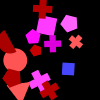
(20)
Three less triangles than crosses are closer to a blue square than a cross.
Twice as many magenta shapes as semicircles are lighter than a magenta shape.
Not zero of the five magenta shapes are to the left of a red shape.
Five less circles than pentagons are closer to a magenta pentagon than a red shape.
At least two blue shapes are closer to a red semicircle than a red triangle.
(21)
Three more yellow shapes than pentagons are darker than a cyan pentagon.
Not five of the two yellow shapes are to the left of an ellipse.
Three more ellipses than cyan shapes are smaller than a yellow cross.
Not three of the five gray shapes are an ellipse.
At least zero of the five ellipses are farther from a yellow ellipse than a cross.
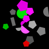
(22)
Five more triangles than crosses are blue.
At least two shapes are behind a blue shape.
At least zero of the four magenta shapes are a circle.
At least zero blue shapes are a blue circle.
Exactly zero rectangles are closer to a magenta shape than a cyan shape.
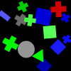
(23)
At least all the three magenta shapes but one are darker than a blue shape.
At most three magenta shapes are bigger than a red cross.
Exactly all the five magenta shapes but one are closer to a magenta semicircle than an ellipse.
Exactly one of the two gray shapes is a gray square.
Less than zero of the three magenta shapes are lighter than a gray ellipse.
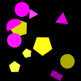
(24)
No yellow shape is behind a magenta semicircle.
Half the three triangles are farther from a rectangle than a triangle.
More than zero of the six magenta shapes are below a gray triangle.
Not all the two rectangles but one are farther from a magenta circle than a yellow pentagon.
At least four of the five yellow shapes are a yellow pentagon.
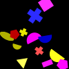
(25)
Five more triangles than yellow shapes are smaller than a yellow shape.
At most all shapes but one are to the right of a yellow semicircle.
Exactly one of the two red shapes is an ellipse.
Most of the six semicircles are bigger than a magenta shape.
Most crosses are lighter than a red shape.
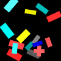
(26)
Less than four of the two red shapes are smaller than a semicircle.
At most one of the five shapes is a square.
At least one of the two green shapes is smaller than a red shape.
At most one shape is a semicircle.
Exactly one magenta shape is bigger than a green shape.
(27)
Not two shapes are below a blue square.
At most five squares are a blue square.
More than one of the two blue shapes is a blue square.
Not three of the five ellipses are farther from a square than a blue ellipse.
Less than two blue shapes are a cross.
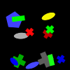
(28)
Not three of the eight shapes are lighter than a green square.
Less than five of the four triangles are a gray triangle.
Not three pentagons are closer to a triangle than a square.
Less than five squares are bigger than a green square.
Less than five cyan shapes are to the left of a yellow shape.
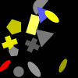
(29)
At least zero of the four green shapes are smaller than a green circle.
A few of the six ellipses are gray.
No ellipse is lighter than a green shape.
At most zero shapes are bigger than a rectangle.
Exactly two of the three squares are above a magenta ellipse.
(30)
Almost no square is a yellow square.
More than one square is green.
At least five of the three circles are green.
More than five squares are darker than a semicircle.
More than two squares are to the right of a semicircle.
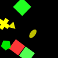
(31)
Twice as many circles as rectangles are bigger than a yellow pentagon.
Less than three of the three magenta shapes are a magenta cross.
Not one shape is smaller than a circle.
Not two magenta shapes are a magenta ellipse.
Most of the two triangles are magenta.
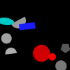
(32)
At most three of the two shapes are a red circle.
Less than three of the two red shapes are bigger than an ellipse.
Exactly zero of the four semicircles are cyan.
At most all shapes but one are a circle.
Not five of the seven shapes are farther from a pentagon than a gray semicircle.
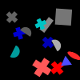
(33)
Exactly zero of the three blue shapes are farther from a red shape than a gray cross.
Three more crosses than cyan shapes are darker than a red shape.
Less than five triangles are below a gray rectangle.
More than three of the five crosses are to the left of a red ellipse.
At least two of the six rectangles are below a cross.
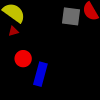
(34)
Not five of the four gray shapes are to the right of a gray cross.
Less than all the eight shapes but one are a gray cross.
Less than one shape is a semicircle.
At most all the six shapes but one are farther from a blue shape than a blue cross.
None of the six crosses is a green cross.
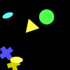
(35)
Four less pentagons than green shapes are above a green pentagon.
Less than five of the three rectangles are lighter than a yellow cross.
At least five of the seven green shapes are lighter than a cross.
At least three shapes are below a yellow triangle.
More than zero of the four yellow shapes are a semicircle.
(36)
More than two pentagons are to the right of a red triangle.
Not one ellipse is smaller than a cyan shape.
At least one of the seven cyan shapes is smaller than a red triangle.
Not four of the four red shapes are smaller than a cyan shape.
At most two of the four red shapes are behind a cyan shape.
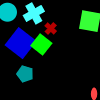
(37)
As many green shapes as red shapes are a cross.
Twice as many green shapes as squares are darker than a triangle.
Exactly all green shapes but one are a green pentagon.
Half the six crosses are below a red shape.
At most four of the seven squares are red.
(38)
Less than all triangles but one are gray.
More than zero shapes are a pentagon.
More than five of the three magenta shapes are to the left of a magenta triangle.
More than zero circles are to the left of an ellipse.
Not zero triangles are a green triangle.
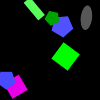
(39)
Two more red shapes than magenta shapes are closer to a blue pentagon than a gray ellipse.
Less than one of the seven shapes is a cyan pentagon.
More than five squares are a green square.
More than all the three pentagons but one are a blue pentagon.
At least four of the seven shapes are above a green shape.
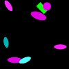
(40)
Exactly five shapes are a pentagon.
Exactly two red shapes are a red square.
Not two of the six red shapes are a pentagon.
Most cyan shapes are a cyan pentagon.
At least two of the five squares are red.
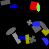
(41)
More than one cyan shape is smaller than a cyan rectangle.
At least four rectangles are a green rectangle.
At most one of the two red shapes is below a yellow triangle.
At least four rectangles are cyan.
At least three shapes are a cyan rectangle.
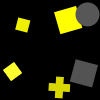
(42)
At least five shapes are bigger than an ellipse.
Not five ellipses are closer to a cross than an ellipse.
As many squares as green shapes are farther from a magenta ellipse than an ellipse.
At least all ellipses but one are behind a magenta shape.
More than all squares but one are behind a red cross.
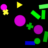
(43)
Two less green shapes than ellipses are to the left of a pentagon.
At least one shape is smaller than an ellipse.
Less than four pentagons are red.
Less than three pentagons are closer to a pentagon than a red pentagon.
Not two ellipses are a magenta ellipse.
(44)
At least one pentagon is in front of a red shape.
Less than five of the two shapes are above a blue shape.
At most five of the four pentagons are a gray pentagon.
Exactly four triangles are blue.
Less than four of the two blue shapes are darker than a red pentagon.
(45)
Half as many squares as gray shapes are lighter than a semicircle.
Half as many squares as blue shapes are closer to a cyan shape than a cyan semicircle.
More than zero semicircles are farther from a blue pentagon than a cyan semicircle.
Not two blue shapes are a square.
Not zero semicircles are darker than a pentagon.
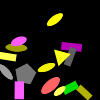
(46)
More than three yellow shapes are to the left of a green rectangle.
At most three of the six rectangles are a magenta rectangle.
Less than one of the three gray shapes is bigger than a yellow triangle.
At least one of the three gray shapes is a pentagon.
A third of the six rectangles is a yellow rectangle.
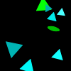
(47)
Twice as many gray shapes as magenta shapes are above a yellow shape.
A third of the three triangles is a gray triangle.
As many magenta shapes as cyan shapes are above a square.
None of the two cyan shapes is below a yellow rectangle.
More than three of the eight squares are to the right of a green shape.
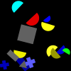
(48)
More than zero semicircles are in front of a yellow square.
More than two of the two semicircles are darker than a semicircle.
Almost no semicircle is a green semicircle.
Less than two of the three crosses are lighter than a green shape.
Less than one green shape is to the right of a yellow semicircle.
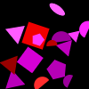
(49)
Almost no shape is above a blue triangle.
At least three shapes are a magenta triangle.
At most three green shapes are to the right of a green shape.
Less than two green shapes are a green triangle.
At least zero of the two blue shapes are lighter than a pentagon.
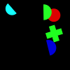
(50)
Less than two green shapes are farther from a green shape than a blue semicircle.
At least all semicircles but one are to the right of a semicircle.
At least three of the three semicircles are a cyan semicircle.
Exactly three shapes are a semicircle.
Almost no blue shape is smaller than a green shape.
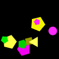
(51)
Four more semicircles than gray shapes are darker than a cyan semicircle.
More than two red shapes are smaller than a red triangle.
Two thirds of the pentagons are cyan.
Not four of the four pentagons are darker than a cyan semicircle.
At most four triangles are to the right of a cyan shape.
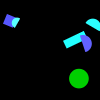
(52)
Half the shapes are an ellipse.
More than two of the two blue shapes are smaller than a yellow ellipse.
Not four of the four yellow shapes are a square.
Not four blue shapes are smaller than a red triangle.
Exactly zero of the four green shapes are a pentagon.
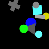
(53)
Two less cyan shapes than circles are below a circle.
Not zero of the five circles are to the left of a rectangle.
More than four of the five circles are farther from a circle than a gray rectangle.
Almost no shape is farther from a green circle than a circle.
At most two of the two triangles are smaller than a blue circle.
(54)
Two thirds of the shapes are farther from a yellow rectangle than an ellipse.
At most four of the two yellow shapes are behind an ellipse.
At least one of the two cyan shapes is in front of a yellow rectangle.
Not one rectangle is behind an ellipse.
Not all the three yellow shapes but one are a yellow ellipse.
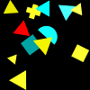
(55)
At most three shapes are cyan.
Not five of the eight triangles are above a triangle.
Less than five of the two squares are lighter than a triangle.
Less than three of the two squares are to the right of a triangle.
At most all the six yellow shapes but one are to the right of a square.
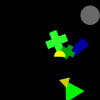
(56)
Exactly two of the seven shapes are below a yellow shape.
At least five shapes are a cross.
Exactly four rectangles are below a gray circle.
A third of the shapes is yellow.
Twice as many yellow shapes as blue shapes are smaller than a green cross.
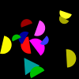
(57)
At most three shapes are green.
Exactly zero of the four yellow shapes are lighter than a cyan semicircle.
At least one yellow shape is darker than a blue semicircle.
All blue shapes are darker than a blue semicircle.
At least three semicircles are lighter than a blue semicircle.
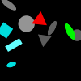
(58)
Half as many triangles as ellipses are gray.
At most three of the three ellipses are cyan.
Not one of the two triangles is smaller than a circle.
At most three of the three gray shapes are behind an ellipse.
At most zero shapes are above a magenta shape.
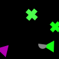
(59)
Exactly two of the eight crosses are behind a circle.
Exactly two yellow shapes are farther from a yellow cross than a blue shape.
Not one of the four yellow shapes is lighter than a circle.
Less than one shape is a blue ellipse.
Almost none of the four circles is farther from a circle than a cross.
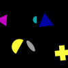
(60)
Four less yellow shapes than crosses are below a triangle.
Not five of the two semicircles are cyan.
Not two yellow shapes are a yellow cross.
More than three ellipses are to the right of a semicircle.
At most zero of the three yellow shapes are darker than a magenta triangle.
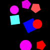
(61)
Exactly two of the six shapes are a magenta circle.
At most zero of the four circles are in front of a red shape.
Less than one shape is cyan.
More than three shapes are in front of a red pentagon.
More than one red shape is to the right of a square.
(62)
Less than four shapes are lighter than a magenta semicircle.
Exactly zero red shapes are a rectangle.
At most all shapes but one are a red pentagon.
More than two of the five semicircles are below a semicircle.
Less than two shapes are a gray triangle.
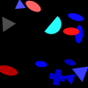
(63)
A few of the four magenta shapes are farther from a cross than a green cross.
At most four crosses are closer to a magenta shape than a magenta rectangle.
Not zero of the three crosses are gray.
At least three magenta shapes are farther from a cross than a magenta cross.
More than zero crosses are behind a magenta pentagon.
(64)
Less than zero shapes are bigger than a yellow square.
More than four crosses are yellow.
At least two of the six shapes are to the left of a square.
At most four of the three yellow shapes are closer to a magenta rectangle than a yellow cross.
Almost no shape is a circle.
(65)
As many pentagons as blue shapes are to the right of a yellow pentagon.
At most five of the eight shapes are to the left of a pentagon.
More than three pentagons are farther from a green circle than a circle.
Less than five of the two triangles are darker than a triangle.
At least one of the six shapes is behind a pentagon.
(66)
Three more crosses than gray shapes are lighter than a blue pentagon.
At most four blue shapes are a pentagon.
Not five of the two circles are darker than a magenta shape.
At least two of the five ellipses are bigger than a magenta cross.
Not all shapes but one are smaller than a red triangle.
(67)
No shape is gray.
Two more blue shapes than magenta shapes are above a gray ellipse.
Exactly three blue shapes are to the left of a yellow shape.
At most four of the six ellipses are in front of a blue shape.
Half the rectangles are a blue rectangle.
(68)
Not four gray shapes are an ellipse.
More than two crosses are to the left of a gray cross.
More than one of the four shapes is gray.
More than one gray shape is a gray ellipse.
Not three of the two crosses are above a gray shape.
(69)
Three more blue shapes than triangles are above a yellow shape.
Less than three yellow shapes are closer to a rectangle than a blue triangle.
At most three of the three yellow shapes are a triangle.
Less than zero of the five triangles are below a blue shape.
More than two triangles are yellow.
(70)
Two more rectangles than gray shapes are smaller than a cyan rectangle.
Exactly one square is below a cyan rectangle.
At least five shapes are blue.
At least four rectangles are a cyan rectangle.
More than four of the four cyan shapes are an ellipse.
(71)
Half the two cyan shapes are a cyan triangle.
More than zero of the three crosses are a blue cross.
Less than three crosses are a cyan cross.
At most one blue shape is below a green shape.
More than two of the seven shapes are green.
(72)
At most one of the four shapes is a green semicircle.
All green shapes are darker than a semicircle.
At most two of the two green shapes are a pentagon.
At most one of the four green shapes is a green pentagon.
More than four of the two green shapes are closer to a yellow semicircle than a red cross.
(73)
Four less squares than pentagons are smaller than a pentagon.
None of the three triangles is blue.
More than five shapes are above a cyan shape.
Exactly all pentagons but one are a cyan pentagon.
At most five of the six pentagons are red.
(74)
Twice as many rectangles as gray shapes are below a circle.
Not one shape is a cyan triangle.
Less than zero blue shapes are a blue cross.
Less than five of the six cyan shapes are darker than a cyan cross.
Exactly zero shapes are bigger than a cyan triangle.
(75)
Not zero of the two gray shapes are below a cyan shape.
At least two of the five yellow shapes are darker than a semicircle.
A few of the three cyan shapes are in front of a yellow triangle.
At most all shapes but one are smaller than a magenta pentagon.
Not three of the two magenta shapes are to the left of a cyan semicircle.
(76)
Almost all shapes are a rectangle.
Exactly one of the seven rectangles is a blue rectangle.
At most all gray shapes but one are to the right of a yellow rectangle.
More than all the eight shapes but one are lighter than a magenta rectangle.
More than four of the eight shapes are darker than a blue shape.
(77)
Five less ellipses than squares are bigger than a gray square.
More than three shapes are below a square.
Not one shape is above a gray shape.
More than one of the four red shapes is bigger than a pentagon.
Less than five of the two ellipses are gray.

(78)
Three more cyan shapes than red shapes are a circle.
Exactly four of the seven shapes are a yellow rectangle.
At least zero circles are a cyan circle.
At most zero of the five circles are yellow.
More than one of the five circles is cyan.
(79)
At least three of the five shapes are a blue circle.
At most five of the three ellipses are smaller than a blue shape.
Not zero ellipses are a red ellipse.
Less than five of the three ellipses are farther from a blue ellipse than an ellipse.
At most five of the four blue shapes are smaller than a blue circle.
(80)
Less than all the seven ellipses but one are a red ellipse.
Not four of the six ellipses are cyan.
Exactly four ellipses are cyan.
Less than three cyan shapes are an ellipse.
At least three ellipses are to the right of a magenta semicircle.
(81)
More than zero of the six shapes are farther from a yellow shape than a yellow square.
Exactly two of the two triangles are a cyan triangle.
Less than two circles are to the left of a square.
Not zero of the two squares are darker than a yellow triangle.
At most three triangles are magenta.
(82)
At most one of the six gray shapes is a gray rectangle.
At most four of the five gray shapes are a gray semicircle.
Less than three of the seven shapes are behind a gray semicircle.
Exactly two of the five semicircles are behind a gray rectangle.
At least one of the five shapes is darker than a rectangle.
(83)
Four more triangles than ellipses are smaller than a magenta shape.
Exactly zero circles are yellow.
More than all triangles but one are above a yellow square.
More than all green shapes but one are lighter than a yellow triangle.
Exactly two of the three crosses are smaller than a triangle.
(84)
Not two of the four red shapes are a cross.
At most two of the four squares are bigger than a cross.
A few of the seven red shapes are a triangle.
No red shape is a red pentagon.
At least four of the five red shapes are a circle.
(85)
Two less circles than magenta shapes are to the right of a yellow shape.
At most one shape is a yellow ellipse.
More than all circles but one are to the right of a yellow shape.
At least one green shape is an ellipse.
Less than one of the eight shapes is cyan.
(86)
Two more rectangles than circles are above a blue shape.
All of the five semicircles are above a pentagon.
Not three of the seven cyan shapes are to the left of a blue shape.
At least two of the six cyan shapes are bigger than a magenta pentagon.
Exactly three of the five semicircles are closer to a pentagon than a cyan pentagon.
(87)
At least three magenta shapes are a magenta cross.
At most four cyan shapes are to the right of a yellow shape.
Exactly zero of the two magenta shapes are below a rectangle.
Twice as many yellow shapes as triangles are bigger than a green semicircle.
At most zero green shapes are closer to a gray circle than a yellow shape.
(88)
More than zero of the four shapes are above a yellow shape.
A few of the four shapes are a blue semicircle.
Two more magenta shapes than blue shapes are above a yellow pentagon.
At most all blue shapes but one are a cross.
Less than one of the four blue shapes is a circle.
(89)
At most two pentagons are green.
Exactly three shapes are smaller than a green pentagon.
Less than three gray shapes are bigger than a pentagon.
Less than four of the three cyan shapes are farther from a green shape than a gray pentagon.
Exactly four of the two yellow shapes are to the right of a pentagon.
(90)
At most two shapes are a triangle.
Exactly one triangle is to the right of a blue shape.
At most two of the three blue shapes are to the left of a blue semicircle.
Not one shape is a semicircle.
At least three cyan shapes are behind a cyan shape.
(91)
All of the eight gray shapes are smaller than a green shape.
More than three semicircles are farther from a pentagon than a blue pentagon.
Less than two blue shapes are a semicircle.
Two less semicircles than green shapes are to the left of a pentagon.
More than two blue shapes are a blue semicircle.
(92)
At least two squares are lighter than a cyan shape.
At least five of the five semicircles are above a red square.
More than all semicircles but one are yellow.
All squares are a red square.
At most four shapes are a blue ellipse.
(93)
More than five shapes are blue.
A few of the seven triangles are cyan.
Exactly zero of the two circles are behind a blue shape.
Not one of the five triangles is behind a triangle.
At most zero of the two red shapes are a triangle.
(94)
Less than two crosses are to the left of a blue shape.
Almost no shape is in front of a blue shape.
At most zero of the four squares are magenta.
More than all blue shapes but one are a blue semicircle.
At least one of the five blue shapes is a blue cross.
(95)
Not all the eight shapes but one are darker than a semicircle.
A quarter of the eight shapes is an ellipse.
A quarter of the seven shapes is an ellipse.
Not all the eight shapes but one are smaller than a green square.
At least two shapes are a cyan circle.
(96)
At most four squares are above a blue square.
Less than five of the five magenta shapes are darker than a magenta shape.
Not four semicircles are below a gray semicircle.
Less than one of the two yellow shapes is above a blue shape.
Most of the six squares are to the left of a semicircle.
(97)
Twice as many squares as circles are cyan.
More than all the three pentagons but one are smaller than a square.
Less than one circle is below a cyan square.
At most four of the six shapes are below a cyan square.
More than two of the five shapes are above a circle.
(98)
At least zero of the eight magenta shapes are bigger than a magenta triangle.
At least two circles are bigger than a magenta circle.
More than one triangle is blue.
Exactly five circles are a magenta circle.
Exactly all the eight magenta shapes but one are farther from an ellipse than a triangle.
(99)
Exactly five of the three yellow shapes are lighter than a gray shape.
Less than two shapes are in front of a square.
More than two of the four gray shapes are to the left of a green shape.
At most one of the three squares is to the right of a gray triangle.
Most of the three yellow shapes are below a square.
(100)
More than two of the six yellow shapes are lighter than a circle.
More than two gray shapes are a circle.
Not three of the two red shapes are below a yellow shape.
At least one of the three red shapes is closer to a cyan circle than a gray circle.
More than one of the six yellow shapes is to the left of a red circle.